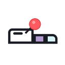

탭 제목과 아이콘을 정리해서, 더 알아보기 쉬운 브라우징을 만들어보세요.
Ctrl+Shift+E (Mac은 Cmd+Shift+E)입니다. 다른 확장과 겹치면
자동으로 등록되지 않을 수 있으니, chrome://extensions/shortcuts에서 StickyTab 항목을
직접 확인/등록해주세요.
이름이나 아이콘 입력칸을 비워둔 채로 저장하면, 그 값만 원래 상태로 되돌아갑니다.
언제든 툴바 아이콘을 클릭한 뒤 팝업 하단의 "사용법 보기" 링크를 누르면 이 페이지로 다시 올 수 있어요.